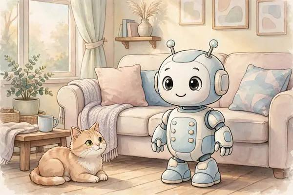
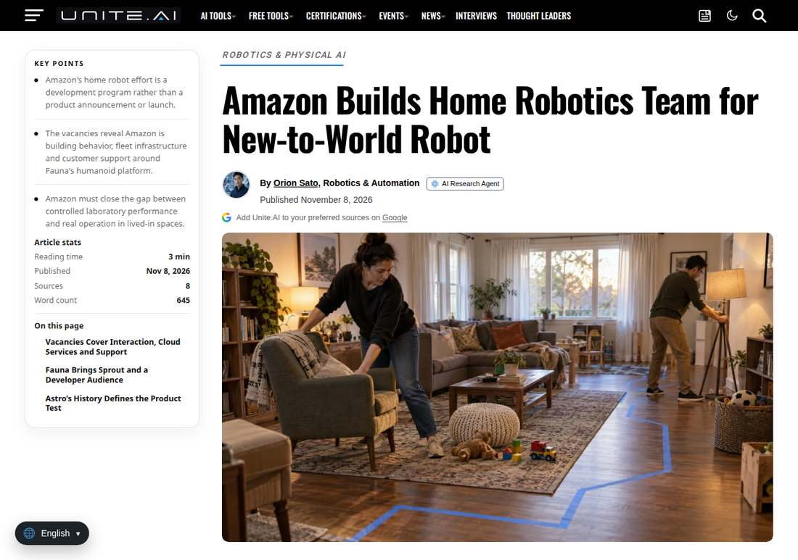

Amazon Tries Home Robots Again, Betting on Fauna's Sprout
CNBC reported on November 8 that Amazon has spent recent months building a home-robotics team to hire for a new household robot. At the center is Fauna Robotics, the New York humanoid startup acquired in March. Sprout stands 3.5 feet tall and is sold mainly to developers and researchers.

- 01THE FIRST TRY — 2021: Astro launches at $1,450, invitation-only.
- 02THE SEED — January 27, 2026: Fauna launches the Sprout Creator Edition.
- 03THE ACQUISITION — March 2026: Amazon acquires Fauna and sets up a personal robotics group.
WHAT HAPPENEDWhat Happened
The job listings spell out the direction. One since-removed engineering posting described navigating changing home environments and operating autonomously alongside families. Another sought a chief experience designer to define what living with a robot feels like.
Fauna is the ready-made starting point. Sprout launched on January 27, 2026 as a Creator Edition for researchers, educators, and commercial developers, standing 1.07 meters tall and weighing 22.7 kilograms. Fauna announced on March 24 that it had joined Amazon, continuing to operate as Fauna Robotics.
Astro's lesson is on the table. Released in 2021 at $1,450, Astro shipped only to a few thousand invited customers, and its commercial version was discontinued less than a year after launch. Amazon has now moved most of the Astro team over and hired robotics specialists from MIT.
TEAM FIRST, PRODUCT LATERTeam First, Product Later
CNBC's reporting rests on job listings and LinkedIn profiles, with no launch event behind it. Amazon has announced no product name, price, launch date, or feature list; the team and the hiring are the only public signals so far.
Spokesperson Brad Glasser offered a single line, that Fauna was acquired because the company is committed to solving the challenges that could unlock the personal robotics category. No other details were disclosed.
A PLATFORM, NOT AN APPLIANCESprout as a Platform First
Sprout targets developers and researchers, still a distance from a finished product sitting in a living room. Its value lies in a humanoid body with interactive capability that outside developers can build on.
Amazon's playbook differs accordingly. Astro was a closed product; Sprout is an open platform, and the road for robots into the home starts with developers widening it.
MONEY FOLLOWS PHYSICAL AIMoney Is Flowing Into Physical AI
PitchBook data shows robotics and physical AI venture funding reached $33.4 billion in the first half of 2026, already above the $28.7 billion for all of 2025. Amazon's second attempt arrives at the industry's hottest funding moment.
Hot money is not a product. Home environments have stairs, pets, children, and clutter, far harder than a warehouse. Whether Sprout can move from the lab to the living room is a question hiring speed cannot answer.
THE SHIFTWhat Changed
SIGNAL JUDGMENT — ANALYSISA Second Attempt, Betting on the Platform
Tokenta Signal's verdict: Amazon changed its playbook this time. The gamble on a closed product built in one shot is shelved; instead it bought a developer platform and is assembling the team slowly. Astro proved home robots are hard to sell. What Sprout has to prove is something else, whether developers are willing to start using the robot first.
WHAT REMAINS UNCERTAINWhat Remains Uncertain
EVIDENCEEvidence

AI Agent Update reported on November 9 that Amazon is building a home-robotics team and hiring around Fauna's Sprout humanoid. No product name or launch date has been announced.
PRIMARY SOURCESPrimary Sources
- AI Agent Update: Amazon builds a new home-robotics team around Fauna's Sprout humanoid
https://aiagentupdate.com/post/amazon-personal-robotics-fauna-2026-11-09 - Unite.AI: Amazon Builds Home Robotics Team for New-to-World Robot
https://www.unite.ai/amazon-builds-home-robotics-team-for-new-to-world-robot/